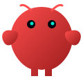
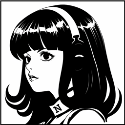

OpenClaw
本地化 AI 生态 & 智能助手
- 更强大、更安全的本地化 AI 助手
- 多种大模型接入，数据不外泄
- 集成丰富开发工具与插件
- 装好配好驱动，即可对话
U-King · AI 装机管家
对话式一键安装 Codex、Claude Code、OpenClaw、Hermes，
自动配好国内直连模型驱动，装完实测连通。
不懂命令行，也能五分钟开工。
⚠️ 检测到你的电脑是 Windows 7 / 8 / 8.1，U-King 在这些系统上无法运行。
不是下载的问题，也不是杀毒软件的问题——下下来双击会直接弹「无法定位程序输入点 ProcessPrng 于动态链接库 bcryptprimitives.dll 上」，程序连启动都启动不了。微软已于 2023 年停止支持这些系统，U-King 的界面依赖的运行库在上面装不了。
唯一的办法是把系统升级到 Windows 10 或 11。升级完再回来下载即可，无需其他操作。
（若你确认自己其实是 Win10/11、只是浏览器版本太老导致误判，可 仍要下载。）
V0.9.31 · Windows 10 / 11 · 安装包仅 2 MB · 免费，无需注册
先退出 U-King，再安装稳定版或替换绿色版即可；若新版已经打不开，可以先卸载程序本体再装。不要删除 ~/.uking 数据目录，设备钱包、余额和本机任务会继续保留。
Windows 稳定版安装包 | Windows 稳定版绿色版 | macOS 稳定版
稳定版不会自动覆盖最新版，只有你主动下载时才会回退。版本与校验值见 stable-version.json。
未签名软件的提示属正常，两步即可：① Edge 提示“通常不会下载”时点 保留；② 双击没反应时，右键文件 → 属性 → 勾选 解除锁定 → 确定，再双击；蓝色拦截窗口里点 更多信息 → 仍要运行。
下载按钮反复失败时，打开 PowerShell 粘贴下面命令回车，会自动尝试多条线路并打开安装包：
irm https://u-claw.org.cn/uking/dl.ps1 | iex
这是系统版本太老，不是文件损坏、也不是中毒。完整报错是「无法定位程序输入点 ProcessPrng 于动态链接库 bcryptprimitives.dll 上」。这个系统接口只有 Windows 10 及以上才有，Windows 7 / 8 / 8.1 上没有，所以程序在启动前就被系统挡住了。
怎么确认自己的系统版本：按 Win + R，输入 winver 回车，弹窗第一行会写「Windows 7」还是「Windows 10 / 11」。
⚠️ 遇到这个报错时，重新下载、换下载线路、关掉杀毒、右键「解除锁定」全都没用，报错会一模一样——请不要在这上面继续折腾。
唯一的解决办法是升级到 Windows 10 或 11。另外要注意：安装包 U-King-Setup.exe 在老系统上能顺利装完，但装完点桌面图标启动时照样报这个错——「装上了却打不开」也是同一个原因。
这是误报，不是真中毒。报出来的名字（Trojan:Win32/Cloxer、Wacatac.B!ml 等带 !ml / Heur 的）是 Defender 的“启发式通用名”，意思是“行为看着像”，不是查到了具体病毒。U-King 要下载 Node、装 Claude / Codex 这些 AI 工具，这个“下载完就运行”的动作会被判定引擎盯上；程序本身没有加壳、不含任何密钥。我们已向微软提交误报申诉。
恢复三步（Windows 安全中心）：① 开始菜单搜 Windows 安全中心 → 病毒和威胁防护 → 保护历史记录；② 找到 U-King 那条，展开「操作选项」，选 允许在设备上（不要选阻止/隔离/删除）；③ 重新下载运行即可。
⚠️ 如果看到的是 PUAAdvertising:Win32/FlashHelper 之类带 PUA 的条目，那是 Flash 助手等广告推送程序，跟 U-King 无关，直接选「删除」。
装机过程中报毒导致工具装不上，也可以先把安装目录加进白名单：Windows 安全中心 → 病毒和威胁防护 → 「病毒和威胁防护设置」下的 管理设置 → 拉到底 添加或删除排除项 → 添加文件夹 %USERPROFILE%\.uking。
已检测到便携 Node，正在写入用户 PATH 并验证命令可用……
Anthropic / OpenAI 双链路均可用，余额在管家里实时显示。
$ claude --version
Claude Code ready
$ 驱动连通实测
模型已回复：可以开始工作了 ✓
AI Tools
U-King 对话式安装 OpenClaw、Claude Code、Codex、Hermes，自动配好国内可用模型驱动，装完实测连通、开箱即用。

本地化 AI 生态 & 智能助手

Anthropic 出品的代码助手
OpenAI 出品的代码代理

面向基础模型的上下文工程
What U-King Does
下载之后会发生什么，一眼就该看明白。U-King 把「安装、配置、连通、修复、开工」变成一条可见的流程。
体检电脑、安装工具、补依赖、写 PATH，每一步都有进度和日志。缺 Node 自动装便携版，装完逐项验证，不靠运气。
内置虾盘云，一键把全部 AI 工具配到可用；也能切 DeepSeek、智谱、Kimi，或一键还原官方配置。不用翻墙、不用信用卡。
安装失败时，日志交给 AI 诊断，给出修复命令；危险命令一律拦截，经你确认后才执行，修完自动重装验证。
对话、终端、文件、浏览器同屏协作，按项目保存 AI 工作现场。不会写提示词也没关系，任务生成器带你把话说清楚。
Get Started
不用在官网学一堆概念。下载、点向导、选驱动，然后开始让 AI 处理你的事。
Windows 推荐 2 MB 安装包；绿色版适合放 U 盘随身带。Mac 用一条命令安装，避开未签名拦截。
自动检测 Node、npm、Codex、Claude Code、Git 等环境，缺什么补什么，全程可见。
选虾盘云或填自己的 API Key。模型真实回复一句话之后，才算安装完成。
Pricing
不订阅套餐。先把工具跑起来，用多少模型能力，就花多少钱。
约 1000 万 token · 余额永久有效
已有自己的 API Key 也能直接填
macOS
未签名 App 直接双击 dmg 容易被系统拦截。命令行安装会自动下载、移入应用程序并打开。
按 Command + 空格，搜索「终端」并打开，粘贴右侧命令，回车。
curl -fsSL https://u-claw.org.cn/uking/install-mac.sh | sh
xattr -rd com.apple.quarantine /Applications/U-King.app提示「已损坏」并不代表文件损坏，这是 macOS 对未签名应用的统一拦截。
下载中断或提示连接重置时，命令会自动换线路；三条都不通说明当前网络可能访问不了这些域名。稍后重试，或手动下载 dmg。
FAQ
¥1 = 50 万 token，U-King 渠道 ¥20 起充。只有调用模型时才消耗 token，管家本体免费。irm https://u-claw.org.cn/uking/dl.ps1 | iex；Mac 可在终端执行 curl -fsSL https://u-claw.org.cn/uking/install-mac.sh | sh。两条脚本都会尝试备用线路，全部不通时会提示手动下载。ProcessPrng 于动态链接库 bcryptprimitives.dll 上」——这是系统缺少 Win10 才有的接口，不是文件损坏、也不是中毒，重新下载、换线路、关杀毒都无效。安装包在老系统上能装完，但装完点图标启动照样报这个错。按 Win + R 输入 winver 可查看自己的系统版本；升级到 Win10 / 11 后即可正常使用。